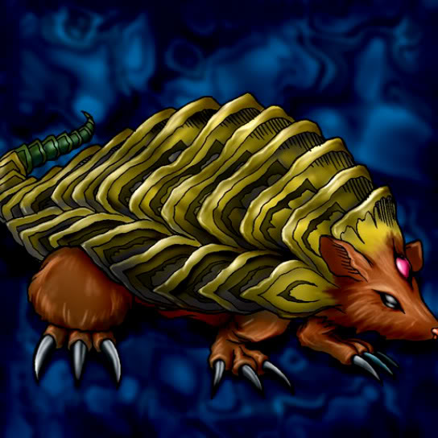

Armored Rat

STATS
ATK: 950
DEF: 1100DECK COST
Deck Cost per Card: 21Fusion List (9 Possible Fusions)
- Armored Rat + Candle of Fate = Flame Cerebrus
- Armored Rat + Dancing Elf = Nekogal #2
- Armored Rat + Enchanting Mermaid = Nekogal #2
- Armored Rat + Goddess with the Third Eye = Nekogal #2
- Armored Rat + Griggle = Flower Wolf
- Armored Rat + Kageningen = Tiger Axe
- Armored Rat + M-Warrior #2 = Tiger Axe
- Armored Rat + Mega Thunderball = Tripwire Beast
- Armored Rat + Monsturtle = Turtle Tiger